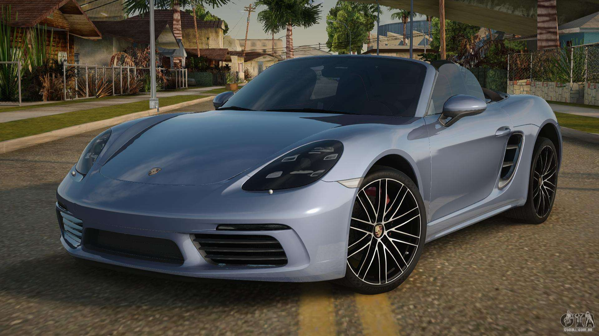

Mods SA-MP
Mods SA-MP
Site experimental
Bem-vindo
Este site é um experimento simples A ideia é testar imagens, textos e estrutura de um site simples sobre mods de SA-MP.
Fundador: Mateus
Escute musica enquanto navega :)
Posts sobre Mods
Tutorial de instalaçao do samp
tutorialMods de carros:
Esses sao os mods de subtituiçoes de carros
Veiculo:Porshe 718
Substitui:comet.dff/txd
Creditos:GTA ALL
⬇️Download
Mods de armas:
Mods de substituição de armas
Arma:Remington MSR
Substitui:sniper.dff/txd
Creditos:GTA ALL

⬇️ Download
Galeria de Imagens

Sobre o projeto
Esse site não tem objetivo profissional. É apenas um teste para aprender HTML, GitHub Pages e organização de arquivos.
Site experimental de SA-MP
Fundador: Mateus